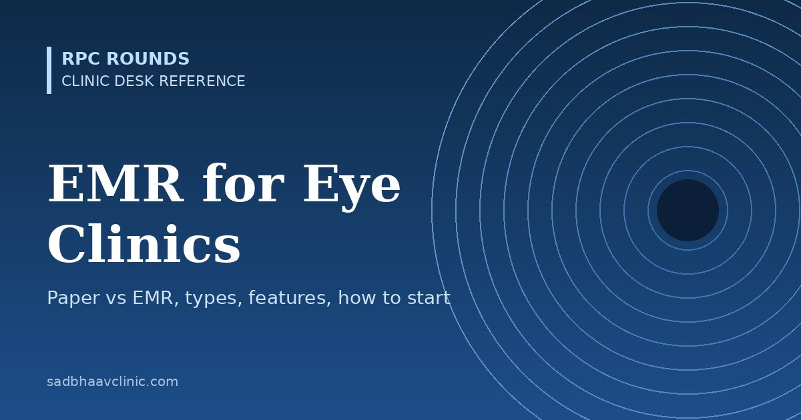

For: Practising ophthalmologists
Last updated: November 2026
Key points in 60 seconds
Paper records are cheap to start with but expensive to run: files get lost, handwriting is misread, follow-up is missed and nothing can be searched. For a new practice, starting with an electronic medical record (EMR) from day one is far easier than converting later. This page compares paper and electronic records, explains the types of EMR available, lists what an eye clinic needs, and gives a step-by-step plan for choosing and starting one.
The short answer
| Paper records | Electronic records (EMR) | |
|---|---|---|
| Start-up cost | Very low: files, cupboard | Software subscription or licence, computers, printer, internet, training |
| Running cost | Stationery, storage space, staff time to find and file | Subscription or maintenance, hardware replacement, backup |
| Speed in OPD | Fast to write once used to it | Slower at first; faster with templates, auto-filled history and device imports |
| Legibility and errors | Handwriting misreads; drug errors | Legible; drug and allergy alerts; standard prescriptions |
| Finding old records | Slow; files lost or misplaced | Instant search by name, phone, ID or diagnosis |
| Follow-up and recall | Depends on memory and registers | Automatic reminders; lists of missed glaucoma or injection follow-ups |
| Trends | Hard to see IOP, vision or thickness trends | Graphs and side-by-side comparison |
| Imaging | Printouts stapled to files | Linked images from OCT, fields, topography |
| Audit and research | Manual, slow | Reports in minutes: outcomes, complication rates, case mix |
| Medico-legal | Can be altered without trace; illegible notes weaken your defence | Time-stamped, audit trail; clear, complete records strengthen your defence |
| Insurance and schemes | Manual claim documents | Faster claims; ABDM and digital incentives possible |
| Privacy and security | Physical theft or loss; limited copies | Cyber risk; needs passwords, roles, backups and DPDP compliance |
| Downtime risk | None from power or internet | Needs a downtime plan for power, internet or server failure |
| Patient experience | Patients carry files | Printed or digital summaries, reminders, portals |
| Type | What it is | Pros | Cons | Best for |
|---|---|---|---|---|
| General clinic EMR (cloud) | Prescription and visit software for all specialties, used on a laptop, tablet or phone | Low cost, quick to start, often free or cheap tiers, ABDM integration common | Few eye-specific fields; no drawings or device imports; templates need work | Single doctor starting out, low budget |
| Ophthalmology-specific EMR | Built for eye care: acuity, refraction, IOP, slit-lamp and fundus templates, glaucoma and injection tracking | Fits eye workflow; device and imaging integration; surgical records | Higher cost; fewer vendors; check local support | Most eye clinics and eye hospitals |
| Hospital information system (HIS or HMS) | Complete hospital software: registration, EMR, billing, pharmacy, OT, inventory, insurance, accounts | One system for everything; reports for management | Expensive, complex, longer set-up; the eye EMR part may be weak | Eye hospitals with beds, pharmacy, multiple doctors or branches |
| Open-source or self-hosted | Software you install on your own server (for example OpenEyes, used in UK hospitals) | No licence fee; full data control; customisable | Needs IT staff, hosting, security and updates; little local support | Teaching hospitals and groups with IT teams |
| Imaging management platforms | Software that stores and compares images from devices (for example Zeiss FORUM, Heidelberg Eye Explorer) | Best for OCT, fields and fundus comparison | Not a full EMR; adds cost | Clinics with several imaging devices, alongside an EMR |
Examples of ophthalmology EMRs used internationally include Epic (with its ophthalmology module), Nextech, ModMed, Compulink, NextGen and Medisoft; in India, several vendors offer eye-specific EMR and hospital software, and large eye hospitals such as LV Prasad Eye Institute have built their own (eyeSmart). General clinic EMRs used by Indian doctors include many cloud apps with free or low-cost plans. Names are examples only, not recommendations; features, prices and support change, so test any product yourself.
| Cloud (online) | On-premise (your own server) | |
|---|---|---|
| Cost | Monthly or yearly subscription | Licence plus server, backup and maintenance |
| Access | Anywhere, any device; easy for multiple clinics | Within the clinic network unless set up for remote access |
| Internet dependence | Needs reliable internet; ask about an offline mode | Works without internet |
| Backups and updates | Done by the vendor (confirm how and where) | Your responsibility |
| Data location and control | On the vendor's servers; check the contract for ownership, location and export | On your premises; you control it |
| Security | Vendor security plus your passwords | Your own security; risk of ransomware if poorly managed |
For most small clinics, cloud EMR with a backup internet connection (broadband plus a mobile hotspot) is the practical choice.
EMR shortlist checklist. Tick each feature a product offers; compare products side by side. Nothing is saved or sent.
See also: all pages for practising ophthalmologists and registrations and licences for a clinic.
📘 Want more exam-ready material? See Most Commons in Ophthalmology on Kindle, or browse all my books.
How to cite this page
Patel D. EMR for Eye Clinics: Paper vs Electronic Records, Types of EMR, Features to Look For, Costs and How to Start. RPC Rounds (Sadbhaav Eye Clinic). Updated November 2026. Available at: https://www.sadbhaavclinic.com/emr-software-eye-clinic-paper-vs-electronic.html. Accessed [date].
Looking for an eye specialist in Ahmedabad? Eye Department at Sadbhaav or book a consultation with Dr. Dhaval Patel.